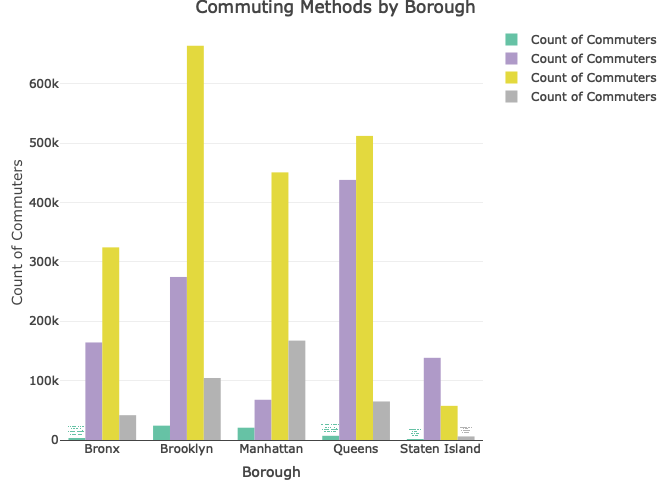

final
loading necessary package
import commuting dataset
commuting_df =
read.csv("data/commuting.csv", na = c("NA",".","")) |>
janitor::clean_names()transfer datatype to numeric, filter by borough, using total number for each commuting mode
borough_df =
commuting_df |>
filter(geo_type_desc == "Borough") |>
mutate(
across(c(bicycle_number, car_truck_or_van_number, public_transportation_number, walked_number),
~as.numeric(gsub(",", "", .))))using long table to list the commuting mode for each borough
commute_long <- pivot_longer(borough_df,
cols = c(bicycle_number, car_truck_or_van_number, public_transportation_number, walked_number),
names_to = "Method",
values_to = "Count",
names_pattern = "(.*)_number") data explore for some graphs
p1_plotly <- plot_ly(data = commute_long, x = ~geography, y = ~Count, type = 'bar', color = ~Method, colors = RColorBrewer::brewer.pal(8, "Set2"),
hoverinfo = 'text', text = ~paste("Borough: ", geography, "<br>Geo ID: ", geo_id, "<br>Method: ", Method, "<br>Count: ", Count),
name = 'Count of Commuters') %>%
layout(title = 'Commuting Methods by Borough',
xaxis = list(title = 'Borough'),
yaxis = list(title = 'Count of Commuters'),
barmode = 'group')
p1_plotly 
do the same for commuting modes percent
commute_percent_long <- pivot_longer(borough_df,
cols = c(bicycle_percent, car_truck_or_van_percent, public_transportation_percent, walked_percent),
names_to = "Method",
values_to = "Percent",
names_pattern = "(.*)_percent")p2_plotly <- plot_ly(data = commute_percent_long, x = ~geography, y = ~Percent, type = 'bar', color = ~Method, colors = RColorBrewer::brewer.pal(8, "Set1"),
hoverinfo = 'text', text = ~paste("Borough: ", geography, "<br>Geo ID: ", geo_id, "<br>Method: ", Method, "<br>Percentage: ", sprintf("%.1f%%", Percent)),
name = 'Percentage of Commuters') %>%
layout(title = 'Percentage Distribution of Commuting Methods by Borough',
xaxis = list(title = 'Borough'),
yaxis = list(title = 'Percentage (%)', tickformat = ",.0%"),
barmode = 'stack')
p2_plotly
we can see from the bar chart, public transportation is the most popular commuting mode in most borough, except for the Staten Island, where the car/cruck/van is the most popular commuting mode.